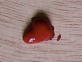

E-humanities
Du CD-ROM
Georgian Cities
(2000) au site
18thc-cities
(2014)
******
Chapitre précédent : Thèses et HDR
Retour au menu principal
Chapitre suivant : Partenariats
 Chapitre précédent : Thèses et HDR
Chapitre précédent : Thèses et HDR
 Retour au menu principal
Retour au menu principal
 Chapitre suivant : Partenariats
Chapitre suivant : Partenariats